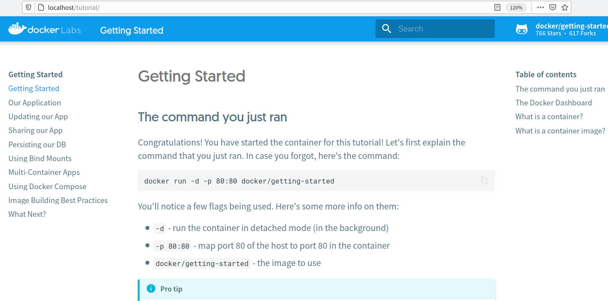

Docker: tutorial 101¶
1. Instalación¶
Puede instalar Docker directamente en su equipo o en una máquina virtual con Linux. Puede acceder a https://docs.docker.com/engine/install/ para obtener instrucciones según su distribución. En los ejemplos se supone una instalación en Debian.
En las prácticas y por comodidad se usa el script que proporciona Docker para una instalación de desarrollo:
$ curl -fsSL https://get.docker.com -o get-docker.sh
$ sudo sh get-docker.sh
Executing docker install script, commit:
7cae5f8b0decc17d657fbc13b2737
<...>
1.1. post-installation steps¶
Si quiere que el usuario ejecute los comandos docker sin usar sudo
If you would like to use Docker as a non-root user, you should now consider adding your user to the “docker” group with something like:
$sudo groupadd docker $sudo usermod -aG docker <your-user>Remember to log out and back in for this to take effect!. >You can also run the following command to activate the changes to groups:
newgrp docker
No olvide comprobar que la instalación es correcta lanzando la imagen hello-world:
$docker run hello-world
2. Introducción¶
Docker proporciona un tutorial guiado para entender como es el despliegue de una aplicación en un entorno de contenedores (en ese tutorial se utilizará una aplicación Node):
https://www.docker.com/101-tutorial/
El tutorial se ofrece en una imagen Docker que debe iniciar con el comando docker run -d -p 80:80 docker/getting-started
alu@xdebian11:~$ docker run -d -p 80:80 docker/getting-started
Unable to find image 'docker/getting-started:latest' locally
latest: Pulling from docker/getting-started
c158987b0551: Pull complete
...
4f7e34c2de10: Pull complete
Digest: sha256:d79336f4812b65.....71b414fbd9297609ffb989abc1
Status: Downloaded newer image for docker/getting-started:latest
670fe226d2779c2c96e6417aabf34.....6d7ca4d050e0161e296325c3b7
alu@xdebian11:~$
Y puede acceder al tutorial en la URL http://localhost
alu@xdebian11:~$ firefox localhost:80
alu@xdebian11:~$

Ya sólo queda seguir los pasos que propone el tutorial.
3. La aplicación¶
El tutorial trabaja con una aplicación en node. Los pasos a dar para construir una imagen Docker que incluya esa aplicación están en el tutorial y son:
-
Descargar la aplicación (en formato ZIP) desde el navegador. Descomprimirla en el directorio de inicio de sesión. Se obtiene un directorio
app, y dentro los directoriosspecysrc. -
Abrir el directorio
appcon el editor vscode. -
Crear dentro de
appun fichero de nombreDockerfileFROM node:18-alpine WORKDIR /app COPY . . RUN yarn install --production CMD ["node", "src/index.js"] -
Acceder a un terminal en el directorio
appy construir la imagen (nombregetting-started) que incluye la aplicación condocker build:alu@xdebian11:~/app$ ls Dockerfile package.json spec src yarn.lock alu@xdebian11:~/app$ docker build -t getting-started . [+] Building 15.1s (7/8) ... -
Como resultado final tenemos una imagen Docker que incluye la aplicación. Esta accede a una base de datos en la propia imagen usando SQLite.
alu@xdebian11:~/app$ docker images
REPOSITORY TAG IMAGE ID CREATED SIZE
getting-started latest 47e87..92 2 minutes ago 262MB
docker/getting-started latest 3e439..2f 6 weeks ago 47MB
hello-world latest feb5d..a5 16 months ago 13.3kB
alu@xdebian11:~/app$
-
Iniciar el contenedor con
docker runalu@xdebian11:~/app$ docker run -dp 3000:3000 --name miapp getting-started f412f7de1737bce2c43490196d0.....afa03d1dffaa7cec alu@xdebian11:~/app$ -
Y probar la aplicación que es accesible en el puerto 3000: http://localhost:3000 añadiendo datos:
alu@xdebian11:~/app$ firefox http://localhost:3000
Puede ahora parar el contenedor y ver como la aplicación deja de estar disponible:
alu@xdebian11:~/app$ docker stop miapp
miapp
alu@xdebian11:~/app$
Y volver a arrancar el contenedor y ver que la aplicación y los datos están disponibles:
alu@xdebian11:~/app$ docker start miapp
miapp
alu@xdebian11:~/app$
4. Actualizar la app¶
Se propone ahora modificar la aplicación. Tras modificarla habrá que construir una nueva imagen, lanzarla, probarla, etc. Pasos a dar:
- Hacer un cambio en la aplicación: modificar en el fichero
app/src/static/js/app.jsel mensaje que se le indica en la línea 56. -
Construir una nueva imagen con la aplicación actualizada (si no se usan etiquetas se pierde el tag (
latest) de la imagen inicial y pasa a ser "none"):alu@xdebian11:~/app$ docker build -t getting-started . [+] Building 11.3s (9/9) FINISHED ... => => writing image sha256:d85186b3b7dc7a088d49318bc4f2a177a4bcd2f677a34271 0.0s => => naming to docker.io/library/getting-started 0.0s alu@xdebian11:~/app$ docker images REPOSITORY TAG IMAGE ID CREATED SIZE getting-started latest d85...dc 10 seconds ago 262MB <none> <none> 47e...92 55 minutes ago 262MB docker/getting-started latest 3e4...2f 6 weeks ago 47MB hello-world latest feb...a5 16 months ago 13.3kB alu@xdebian11:~/app$ -
Si intenta lanzar la nueva imagen es posible que tenga un errorya que si no hemos parado el contenedor previo el nuevo intenta usar el mismo puerto
alu@xdebian11:~/app$ docker run -d -p 3000:3000 --name nuevaapp getting-started f94faea80f45306db4f387......6ffba3753541419cebc316a3179cb26 docker: Error response from daemon: driver failed programming external connectivity on endpoint nuevaapp (312d6bfa399ecc15947d3......c21506867769b01cdc2c2ebc68071c): Bind for 0.0.0.0:3000 failed: port is already allocated. alu@xdebian11:~/app$ -
Puede comprobar los contenedores en ejecución con
docker ps, detenerlo condocker stopy borrarlo condocker rmpara terminar lanzando el nuevo contenedor:
alu@xdebian11:~/app$ docker ps
CONTAINER ID IMAGE COMMAND CREATED STATUS PORTS NAMES
c75ba15aa019 47e872a9bc92 "docker-entrypoint.s…" 15 minutes ago Up 11 minutes 0.0.0.0:3000->3000/tcp, :::3000->3000/tcp miapp
292ffb5d2de8 docker/getting-started "/docker-entrypoint.…" 24 minutes ago Up 24 minutes 0.0.0.0:80->80/tcp, :::80->80/tcp tutorial
alu@xdebian11:~/app$ docker stop miapp
miapp
alu@xdebian11:~/app$ docker rm miapp
miapp
alu@xdebian11:~/app$ docker run -d -p 3000:3000 --name nuevaapp getting-started
f48e6b71bdafb4fd84c02e4a9ab.....74c518545599847cb66cc7cbd
alu@xdebian11:~/app$
Nota: puede generar una imagen especificando una etiqueta completa con el formato
<repo:tag>:docker build -t getting-started:v1.0.
5. Compartir en Dockerhub¶
En este apartado "registrará" su imagen en DockerHub. Para ello es necesario tener una cuenta en DockerHub. La creación previa del repositorio es opcional, si no lo hace se creará al subir la imagen un repositorio público (y sin descripción).
Pasos a dar:
- Crear cuenta en DockerHub si no la tuviera.
- Iniciar sesión en DockerHub desde línea de comandos con
docker login -u <dockerhub_username> - Etiquetar correctamente la imagen con su usuario en Dockerhub
docker tag repo user/repo.
docker tag getting-started user/getting-started
- Subir la imagen a DockerHub con
docker push:
docker push user/getting-started
Para poder utilizar dicha imagen basta indicar el repositorio de la imagen al ejecutarla (incluyendo el usuario). Si no está en local se descarga de DockerHub.
docker run -dp 3000:3000 usuario/getting-started
6. Persistencia de los datos¶
Ahora mismo los datos del contenedor se pierden al terminar el mismo:
When a container runs, it uses the various layers from an image for its filesystem. Each container also gets its own "scratch space" to create/update/remove files. Any changes won't be seen in another container, even if they are using the same image.
En el caso de nuestra aplicación al terminar la ejecución del contenedor se pierde el fichero con la base de datos SQLite
the todo app stores its data in a SQLite Database at /etc/todos/todo.db. If you're not familiar with SQLite, no worries! It's simply a relational database in which all of the data is stored in a single file.
Con los volúmenes va a conectar el sistema de ficheros del contenedor con el sistema de ficheros de la maquina host. De esta forma, si monta el mismo directorio del host al relanzar el contenedor accederá siempre a los mismos ficheros. Hay dos formas de usar volúmenes:
- volúmenes con nombre (gestionados por Docker)
- bind mounts o volúmenes en directorios
6.1. Volumen con nombre¶
Al crear volúmenes con nombre Docker se encarga de reservar el espacio necesario en el sistema de ficheros del host y hacer el volumen accesible al contenedor.
Pasos a dar:
-
Crear un volumen con el nombre
todo-dbdocker volume create todo-db -
Lanzar el contenedor con un nuevo parámetro, la opción
-v. A esta se le indican dos valores, el volumen con nombre creadotodo-dby el directorio/etc/todosdel contenedor donde se montará el volumen (la aplicación del ejemplo almacena en/etc/todosla base de datos)docker run -dp 3000:3000 -v todo-db:/etc/todos getting-started -
Acceda a la aplicación desde el navegador y añada varios elementos.
-
Detenga y borre el contenedor:
docker rm -f getting-started -
Inicie de nuevo otro contenedor y compruebe que se conservan los datos de la ejecución anterior.
docker run -dp 3000:3000 -v todo-db:/etc/todos getting-started -
Para ver la localización del volumen use el comando
docker volume inspectdocker volume inspect todo-db -
Por último, puede borrar el volumen con
docker volume rm(genera error si el volumen está en uso)console alu@xdebian11:~/app$ docker volume rm todo-db Error response from daemon: remove todo-db: volume is in use - [c89f805e963720..........d1c00ba2a88696fc59f9b8c525e] alu@xdebian11:~/app$ docker ps CONTAINER ID IMAGE COMMAND CREATED STATUS PORTS NAMES c89f805e9637 getting-started "docker-entrypoint.s…" About a minute ago Up About a minute 0.0.0.0:3000->3000/tcp, :::3000->3000/tcp ecstatic_johnson 292ffb5d2de8 docker/getting-started "/docker-entrypoint.…" About an hour ago Up About an hour 0.0.0.0:80->80/tcp, :::80->80/tcp tutorial alu@xdebian11:~/app$ docker rm -f ecstatic_johnson ecstatic_johnson alu@xdebian11:~/app$ docker volume rm todo-db todo-db alu@xdebian11:~/app$
6.2. Bind mount¶
Los volúmenes con nombre son suficientes si queremos almacenar datos y no le preocupa dónde ni cómo se almacenan. Pero puede ser que busque un control mayor de esos datos, e interese que un directorio determinado del host se monte como un directorio del contenedor. Esto es útil en entornos de desarrollo.
La idea de este apartado es hacer cambios en la aplicación (directorio app) y que estos se reflejen en el contenedor en ejecución sin tener que crear una nueva imagen, ejecutarla, etc.
Nota: en este apartado la aplicación Node usa el módulo
nodemon. Este detecta cambios en los ficheros de la aplicación Node y si es necesario la reinicia. Puede comprobar su uso en el ficheropackage.json.
Para probar estos volúmenes se lanza el contenedor mapeando (opción -v) el directorio de trabajo (debe ser app) al directorio /app del contenedor. En este caso no se usa la imagen creada en apartados previos sino una imagen con Node (node:18-alpine)
docker run -dp 3000:3000 \
-w /app \
-v "$(pwd):/app" \
node:18-alpine \
sh -c "yarn install && yarn run dev"
La opción -w nos indica el directorio de trabajo en el contenedor (similar a WORKDIR /app en el fichero Dockerfile). Si ahora modifica por ejemplo el texto del botón "Add item" en el fichero src/static/js/app.js puede observar como se "refresca" la aplicación con ese cambio.
Incluso puede combinar los dos tipos de volúmenes:
- un bind mount para la aplicación
- un volumen con nombre para dar persistencia a la BD:
docker run -dp 3000:3000 \
-w /app \
-v "$(pwd):/app" \
-v todo-db:/etc/todos \
node:18-alpine \
sh -c "yarn install && yarn run dev"
Puede ver el fichero de log con docker logs -f <container_id>
alu@xdebian11:~/app$ docker logs -f nervous_heisenberg
yarn install v1.22.19
[1/4] Resolving packages...
...
[4/4] Building fresh packages...
Done in 11.71s.
yarn run v1.22.19
$ nodemon src/index.js
[nodemon] 2.0.20
...
[nodemon] watching extensions: js,mjs,json
[nodemon] starting `node src/index.js`
Using sqlite database at /etc/todos/todo.db
Listening on port 3000
[nodemon] restarting due to changes...
[nodemon] starting `node src/index.js`
Using sqlite database at /etc/todos/todo.db
Listening on port 3000
7. Multicontenedor modo "manual"¶
En este apartado se introducen varios cambios:
- Pasar la aplicación de un único contenedor a dos:
- un contenedor con la base de datos, que pasa deser SQLite a MySQL.
- otro contenedor con la aplicación
- Usar la herramienta
docker composepara describir nuestra aplicación.
La aplicación es capaz de diferenciar el paso de uno a dos contenedores en base a la existencia de la variable de entorno MYSQL_HOST=mysql que comprueba en el fichero src/persistence/index.js
// file src/persistence/index.js
if (process.env.MYSQL_HOST)
module.exports = require('./mysql');
else
module.exports = require('./sqlite');
Realice el cambio a dos contenedores paso a paso ejecutando cada uno de ellos de forma manual.
-
Crear una red (
docker network create) donde se comunicará los dos contenedores:alu@xdebian11:~/app$ docker network create todo-app b5d1c5cccc26f02861411b845....0fb64ccbc3067a99d9e6cb9cadfc17 alu@xdebian11:~/app$ -
Arrancar un contenedor con un servidor MySQL. Al mismo se le pasan dos variables de entorno, la clave de MySQL y el nombre de la base de datos. Tiene los detalles de cómo lanzar una imagen MySQL en este enlace: (https://hub.docker.com/_/mysql/). Observe que también se usa un volumen
todo-mysql-datapara darle persistencia a la base de datos:
alu@xdebian11:~/app$ docker run -d \
--network todo-app --network-alias mysql \
-v todo-mysql-data:/var/lib/mysql \
-e MYSQL_ROOT_PASSWORD=secret \
-e MYSQL_DATABASE=todos \
--name mysqlcontainer
mysql:8.0
Unable to find image 'mysql:8.0' locally
8.0: Pulling from library/mysql
39fbafb6c7ef: Pull complete
...
Digest: sha256:03b0af....9e0dcaebe411a1ec75e6adc9fea051aa2
Status: Downloaded newer image for mysql:8.0
04e7b5d6bc89883ba9f1c....79367b4cfaa19ba1bf2e68160b389b2346
alu@xdebian11:~/app$
-
Probar la creación de la base de dato accediendo al contenedor con
docker exec -ity ejecutamos el comandomysql -palu@xdebian11:~/app$ docker exec -it mysqlserver mysql -p Enter password: Welcome to the MySQL monitor. Commands end with ; or \g. Your MySQL connection id is 8 Server version: 8.0.32 MySQL Community Server - GPL ... Type 'help;' or '\h' for help. Type '\c' to clear the current input statement. mysql> SHOW databases; +--------------------+ | Database | +--------------------+ | information_schema | | mysql | | performance_schema | | sys | | todos | +--------------------+ 5 rows in set (0.00 sec) mysql> use todos; Database changed mysql> show tables; Empty set (0.00 sec) mysql> exit Bye alu@xdebian11:~/app$ -
En el tutorial se muestra el uso de la imagen
nicolaka/netshootpara obtener la IP del servidor MySQL y comprobar que la opción--netwok-alias mysqlpermite usarmysqlcomo nombre de host del contenedor.alu@xdebian11:~/app$ docker inspect mysqlserver | grep IPAddress "SecondaryIPAddresses": null, "IPAddress": "", "IPAddress": "172.19.0.3", alu@xdebian11:~/app$ docker run -it --network todo-app nicolaka/netshoot dP dP dP 88 88 88 88d888b. .d8888b. d8888P .d8888b. 88d888b. .d8888b. .d8888b. d8888P 88' `88 88ooood8 88 Y8ooooo. 88' `88 88' `88 88' `88 88 88 88 88. ... 88 88 88 88 88. .88 88. .88 88 dP dP `88888P' dP `88888P' dP dP `88888P' `88888P' dP Welcome to Netshoot! (github.com/nicolaka/netshoot) 5a5c709c3917 ~ dig mysql ; <<>> DiG 9.18.8 <<>> mysql ;; global options: +cmd ;; Got answer: ;; ->>HEADER<<- opcode: QUERY, status: NOERROR, id: 51505 ;; flags: qr rd ra; QUERY: 1, ANSWER: 1, AUTHORITY: 0, ADDITIONAL: 0 ;; QUESTION SECTION: ;mysql. IN A ;; ANSWER SECTION: mysql. 600 IN A 172.19.0.3 ;; Query time: 0 msec ;; SERVER: 127.0.0.11#53(127.0.0.11) (UDP) ;; WHEN: Sun Feb 05 14:06:32 UTC 2023 ;; MSG SIZE rcvd: 44 5a5c709c3917 ~ ping mysql PING mysql (172.19.0.3) 56(84) bytes of data. 64 bytes from mysqlserver.todo-app (172.19.0.3): icmp_seq=1 ttl=64 time=0.131 ms 64 bytes from mysqlserver.todo-app (172.19.0.3): icmp_seq=2 ttl=64 time=0.096 ms ^C --- mysql ping statistics --- 2 packets transmitted, 2 received, 0% packet loss, time 1013ms rtt min/avg/max/mdev = 0.096/0.113/0.131/0.017 ms 5a5c709c3917 ~ exit alu@xdebian11:~/app$ -
Lanzar un segundo contenedor con la aplicación y especificar las variables de entorno que permiten conectarla con la base de datos
mysql:alu@xdebian11:~/app$ docker run -dp 3000:3000 \ -w /app -v "$(pwd):/app" \ --network todo-app \ -e MYSQL_HOST=mysql \ -e MYSQL_USER=root \ -e MYSQL_PASSWORD=secret \ -e MYSQL_DB=todos \ --name miapp \ node:18-alpine \ sh -c "yarn install && yarn run dev" 5ab724f02d8b3aba8d40e....24bc8581a8a1730fb8d089e0441 alu@xdebian11:~/app$ -
Comprobar que se ha conectado con
mysqlalu@xdebian11:~/app$ docker logs miapp yarn install v1.22.19 [1/4] Resolving packages... success Already up-to-date. Done in 0.38s. yarn run v1.22.19 $ nodemon src/index.js [nodemon] 2.0.20 [nodemon] to restart at any time, enter `rs` [nodemon] watching path(s): *.* [nodemon] watching extensions: js,mjs,json [nodemon] starting `node src/index.js` Waiting for mysql:3306. Connected! Connected to mysql db at host mysql Listening on port 3000 alu@xdebian11:~/app$ -
Probar la aplicación añadiendo datos.
-
Conectar a la base de datos para comprobar los datos en la tabla
todo_items:alu@xdebian11:~/app$ docker exec -it mysqlserver mysql -p todos Enter password: .... Type 'help;' or '\h' for help. Type '\c' to clear the current input statement. mysql> select * from todo_items; +-----------------+------------------------+-----------+ | id | name | completed | +-----------------+------------------------+-----------+ | e1b61a.....891d | Revisar Apuntes Docker | 0 | | 867350.....6769 | Rehacer deply Heroku | 0 | | ee1523.....d230 | Probar deploy en AWS | 0 | +-----------------+------------------------+-----------+ 3 rows in set (0.00 sec) mysql> exit Bye alu@xdebian11:~/app$
Nota: El uso de variables de entorno para información sensible no es adecuado. Verá como resolver esta situación en un apartado posterior.
8. Multi contenedor con docker-compose¶
En vez de realizar el despliegue de forma manual paso a paso lo habitual es utilizar un fichero descriptivo que es interpretado por el comando docker compose.
8.1. Fichero docker-compose.yml¶
El fichero sería similar a este (en el tutorial se explica paso a paso su creación):
services:
app:
image: node:18-alpine
command: sh -c "yarn install && yarn run dev"
ports:
- 3000:3000
working_dir: /app
volumes:
- ./:/app
environment:
MYSQL_HOST: mysql
MYSQL_USER: root
MYSQL_PASSWORD: secret
MYSQL_DB: todos
mysql:
image: mysql:8.0
volumes:
- todo-mysql-data:/var/lib/mysql
environment:
MYSQL_ROOT_PASSWORD: secret
MYSQL_DATABASE: todos
volumes:
todo-mysql-data:
8.2. Comandos docker compose¶
La herramienta docker compose debe estar instalada. Para verificarlo:
alu@xdebian11:~/app$ docker compose version
Docker Compose version v2.15.1
alu@xdebian11:~/app$
Ahora para lanzar la aplicación basta ejecutar el comando docker-compose up -d (crea la red, los volúmenes necesarios y lanza los contenedores), Si no se especifica fichero se utiliza el docker-compose.yml del directorio:
alu@xdebian11:~/app$ docker compose up -d
[+] Running 4/4
⠿ Network app_default Created 0.1s
⠿ Volume "app_todo-mysql-data" Created 0.0s
⠿ Container app-app-1 Started 0.7s
⠿ Container app-mysql-1 Started 0.6s
alu@xdebian11:~/app$
Para ver los logs de los dos servicios en "vivo" basta ejecutar docker-compose logs -f. Si desea ver solo el log de uno de los servicios en este caso docker-compose logs app|mysql
Para detener los servicios basta docker-compose down. Tenga en cuenta que por defecto este comando no borra los volúmenes (tendría que usar el flag --volumes).
alu@xdebian11:~/app$ docker compose down
[+] Running 3/3
⠿ Container app-mysql-1 Removed 3.4s
⠿ Container app-app-1 Removed 0.2s
⠿ Network app_default Removed 0.1s
alu@xdebian11:~/app$ docker volume ls
DRIVER VOLUME NAME
local app_todo-mysql-data
alu@xdebian11:~/app$
9. Image Building Best Practices¶
9.1. Escanear la imagen¶
En el tutorial de docker habla de docker scan, que ha sido sustituida por docker scout. Para instalarlo: https://docs.docker.com/scout/install/
Y para utilizarlo en línea de comandos. Algunos ejemplos de uso:
docker scout quickview: summary of the specified image, see Quickviewdocker scout cves: local analysis of the specified image, see CVEsdocker scout compare: analyzes and compares two images
También es posible (opción de pago, free sólo una) activar el escaneo de imágenes al registrarlas en DockerHub. Docker Scout image analysis
9.2. Optimizar build de la imagen¶
Las imágenes de Docker se organizan en capas. Si un nivel o capa cambia provoca que todas las capas posteriores se tengan que reconstruir. Por ello es preferible situar primero las capas que con menos frecuencia cambian, y dejar para las últimas las que se modifican con más frecuencia.
A continuación se modifica el Dockerfile del tutorial: dejamos como penúltima capa la copia del directorio de la aplicación y se crean antes la copia de los paquetes de dependencias. Se supone que habrá mas cambios en el código que en las dependecias.
FROM node:18-alpine
WORKDIR /app
COPY package.json yarn.lock ./
RUN yarn install --production
COPY . .
CMD ["node", "src/index.js"]
9.3. El fichero .dockerignore¶
Este fichero permite indicar directorios (y ficheros) que no se deben copiar del host a la imagen durante la creación de la imagen. El formato es similar al fichero .gitignore utilizado con git. En el tutorial se crea este fichero y se incluye el directorio node_modules que se genera durante las pruebas en local de la aplicación.
9.4. Build multistage¶
Esta facilidad se usa para separar las dependencias de construcción de la aplicación de las dependencias de ejecución de la misma. Esto reduce el tamaño de la imagen ya que sólo se incluye lo necesario para su ejecución.
Ejemplo típico son las aplicaciones Java, donde JDK es necesario para generar la aplicación en bytecode, pero no para ejecutarla. O utilizar herramientas adicionales para construir la aplicación que tampoco serían necesarias para su ejecución.
Vea este fichero Dockerfile
FROM maven AS build
WORKDIR /app
COPY . .
RUN mvn package
FROM tomcat
COPY --from=build /app/target/file.war /usr/local/tomcat/webapps
La primer parte construye el fichero WAR en una imagen maven. La segunda parte usa una imagen tomcat y simplemente copia el fichero WAR generado en la primera parte en el directorio de aplicaciones de tomcat. Observe que el fichero se copia --from=build, alias que se genera en la primera línea (FROM maven AS build). En este caso la imagen tomcat puede ser un 10% menor que maven.
10. Anexos¶
10.1. Obsoleto: docker scan¶
Existen herramientas para comprobar posibles vulnerabilidades en imágenes. Una de ellas es Snyk.
Docker has partnered with Snyk to provide the vulnerability scanning service. https://snyk.io/product/container-vulnerability-management/
Para escanear la imagen desde CLI:
alu@xdebian11:~/app$ docker scan docker/getting-started
Testing docker/getting-started...
✗ Low severity vulnerability found in libxpm/libxpm
Description: CVE-2022-4883
Info: https://security.snyk.io/vuln/SNYK-ALPINE317-LIBXPM-3232761
Introduced through: libxpm/libxpm@3.5.14-r0, gd/libgd@2.3.3-r3
From: libxpm/libxpm@3.5.14-r0
From: gd/libgd@2.3.3-r3 > libxpm/libxpm@3.5.14-r0
Fixed in: 3.5.15-r0
....
✗ High severity vulnerability found in curl/libcurl
Description: Cleartext Transmission of Sensitive Information
Info: https://security.snyk.io/vuln/SNYK-ALPINE317-CURL-3179543
Introduced through: curl/libcurl@7.86.0-r1, curl/curl@7.86.0-r1
From: curl/libcurl@7.86.0-r1
From: curl/curl@7.86.0-r1 > curl/libcurl@7.86.0-r1
From: curl/curl@7.86.0-r1
Fixed in: 7.87.0-r0
Organization: angoies-98m
Package manager: apk
Project name: docker-image|docker/getting-started
Docker image: docker/getting-started
Platform: linux/amd64
Base image: nginx:1.23.3-alpine
Licenses: enabled
Tested 63 dependencies for known issues, found 6 issues.
Your base image is out of date
1) Pull the latest version of your base image by running 'docker pull nginx:1.23.3-alpine'
2) Rebuild your local image